Подготовка Что необходимо сделать перед началом работы
Минимальные требования
Для установки и запуска Drupal ваш хостинг-сервер должен соответствовать минимальным требованиям данной CMS. Большинство хостинг-компаний отвечают этим требованиям. Однако, могут быть исключения, поэтому вы должны проверить следующие требования.
Дисковое пространство
Минимальная установка Drupal требует 15 Мб свободного дискового пространства. 60 Мб требуется для сайта с большим количеством установленных тем и модулей. Имейте в виду, что вам понадобиться гораздо больше пространства для загружаемых пользователями файлов, медиа, резервного копирования и пр.
Web-сервер
Apache, Nginx или Microsoft IIS.
Подробнее о требованиях к серверу
Apache является наиболее используемым сервером для Drupal. Большинство разработок и тестирований осуществлялось именно на данном сервере. Поэтому мы рекомендуем использовать именно Apache.
База данных
MySQL 5.0.15 или выше с PDO, PostgreSQL 8.3 или выше с PDO, SQLite 3.3.7 или выше.
При установке следует учитывать, что не все модули Drupal поддерживают базы данных PostgreSQL и SQLite, а также то, что демонстрационные данные и настройки шаблона хранятся в формате MySQL. Поэтому мы рекомендуем вам использовать только базу данных MySQL.
PHP
PHP 5.2.5 или выше (5.3 рекомендуется).Подробнее о требованиях PHP
Скачивание движка Drupal
Пропустите данный шаг, если у вас уже есть скаченный/установленный движок Drupal.
Первым шагом развертывания сайта на базе Drupal является загрузка ядра Drupal с официального сайта http://drupal.org/.

На открывшейся странице вы можете скачать zip- или tar.gz-архив с файлами ядра.
Для того, чтобы скачать последнюю версию Drupal, нажмите кнопку Download Drupal X.XX (Скачать Drupal X.XX), где X.XX - номер последней версии Drupal.
В случае, если вам необходима более ранняя версия Drupal, перейдите по ссылке Other Releases (Другие версии):

На открывшейся странице в поле API Version (Версия API) выберите нужную ветку версий Drupal и нажмите кнопку Apply (Применить):

Ниже появится полный список версий в данной ветке, и вы сможете скачать нужную вам версию.
Проверьте требования шаблона относительно требуемой версии Drupal и убедитесь, что вы скачиваете нужную версию.
Извлечение файлов
После загрузки Drupal вам потребуется извлечь файлы и папки из архива.
Вы можете сделать это с помощью программ WinZip (PC), StuffitExpander (MAC) и т.п.
Посмотрите следующие инструкции по извлечению файлов из архивов WinZip (PC) и StuffitExpander (MAC).
Внимание! Если в панели управления вашим хостингом доступна функция "Распаковать файлы", вы можете загрузить на сервер сам .zip архив и распаковать его там.
Загрузка Drupal на сервер
В случае, если вы распаковали файлы локально на вашем компьютере, вам потребуется загрузить их на хостинг-сервер.
Drupal должен быть загружен в корневую папку вашего хостинг-сервера. Как правило, она называется WWW или public_html. Если вы не уверены, обратитесь к вашему хостинг-провайдеру за подробной информацией.
Файлы могут быть загружены на сервер с помощью файловых менеджеров, таких как FileZilla, TotalCommander т.п. Существует ряд дополнений для браузеров (например, FireFTP для Mozilla Firefox). Также некоторые хостинг-провайдеры предоставляют такую услугу, как файловый менеджер. Проверьте свою панель управления хостингом или обратитесь за подробной информацией к своему хостинг-провайдеру.
Вы можете посмотреть видео-инструкцию Как загрузить файлы на сервер или Как загрузить файлы с помощью cPanel (WebHost менеджер, WHM).
Создание базы данных
Как уже говорилось выше, для установки Drupal вам понадобится база данных MySQL. База данных может быть создана с помощью панели управления хостингом.
Свяжитесь со своим хостинг-провайдером для получения помощи в создании базы данных на вашем хостинге.
В процессе создания базы данных вы получите следующие данные:
- Имя сервера базы данных или имя хоста.
- Имя базы данных.
- Имя пользователя базы данных.
- Пароль пользователя базы данных.
Пожалуйста, запомните эти данные. Они вам пригодятся в процессе установки.
Вы также можете посмотреть следующие инструкции:
Установка Drupal и темы Вся специфика установки
В данном разделе описываются различные способы установки CMS Drupal и темы на вашем сайт. Следуйте данным указаниям, если Drupal еще не установлен на вашем сервере.
Перед тем, как продолжить, необходимо решить, вы хотите установить Drupal с демонстрационными данными или же без них. Демонстрационные данные шаблона сделают ваш сайт в точности таким же, как на странице предварительного просмотра шаблона. Будут установлены все модули, текстовые блоки, медиа-файлы и прочее.
Если вы не готовы установить демонстрационные данные, перейдите к шагу "Установка темы без демонстрационных данных". Вы также сможете установить их позже. Для этого следуйте указаниям в разделе "Установка темы с демонстрационными данными на существующий сайт".
Установка темы с демонстрационными данными
Файлы профиля демонстрационных данных должны быть загружены на сервер ПЕРЕД началом установки Drupal!
Для установки темы с демонстрационными данными выполните следующие действия:
- Скопируйте содержимое папки sample_data/ из архива с шаблоном в корневую папку Drupal-сайта на вашем сервере. Вы можете заменить существующие файлы. Данная папка содержит файлы темы, модули, библиотеки, медиа-файлы, профиль, позволяющий установить демонстационные данные, а также некоторые правки, необходимые для коректной работы сайта.
Замена этих файлов добавит новую опцию в процесс установки и никак не повлияет на саму CMS.
- Введите адрес вашего сайта в адресной строке браузера, чтобы начать процедуру установки Drupal (см. скриншоты, демонстрирующие следующие три шага, в слайдере, после п. 8).
- На начальной странице установки вам будет предложено выбрать профиль установки. Выберите Demonstration site (Демонстрационный сайт) и нажмите кнопку Save and Continue (Сохранить и продолжить).
- Следуйте инструкциям на экране. Заполните поле имени базы данных, имени пользователя, пароля и хоста базы данных, полученных при создании базы данных.
- На шаге Choose snapshot (Выберите снапшот) укажите снапшот с названием скачанной темы, как показано на рисунке ниже, и нажмите кнопку Restore (Восстановить).
Снапшот представляет собой копию базы данных с демонстрационными данными, а также файл с информацией об использованных модулях. Сохранен снапшот в формате базы данных MySQL.
Важно установить (развернуть) снапшот для того, чтобы заставить ваш сайт выглядеть так же, как на странице просмотра шаблона.
-

1. Выберите Demonstration site (Демонстрационный сайт).
-
2. Заполните поле имени базы данных, имени пользователя, пароля и хоста базы данных.
-
3. Укажите снапшот с названием скачанной темы.
-

3. Перейдите на установленный сайт.
- Нажмите на ссылку Visit your new site (Посетите свой новый сайт) или в адресной строке браузера наберите http://www.example.com/?q=user/login, где www.example.com - адрес вашего сайта.
Чтобы зайти на сайт в качестве администратора, используйте имя пользователя admin и пароль admin123. В целях безопасности мы рекомендуем вам сменить пароль сразу же после установки.
- Установка Drupal почти завершена. Последнее, что необходимо сделать, - обновить таблицы базы данных. В адресной строке браузера введите http://www.example.com/update.php, где www.example.com - адрес вашего сайта.
- Следуйте инструкциям на экране.
- После обновления перейдите по одной из ссылок: Front page (Главная страница сайта) или Administration pages (Панель администрирования сайта).
Вы можете просмотреть следующие инструкции:
Установка темы без демонстрационных данных
Для установки темы без демонстрационных данных выполните следующие указания:
- Скопируйте содержимое папки sample_data/sites/all/themes/ из архива с шаблоном в папку sites/all/themes/ Drupal-сайта на вашем сервере.
Обратите внимание, что некоторые элементы шаблона реализованы с помощью модулей. На данном этапе установки модули не подключаются, поэтому внешний вид и функционал темы может несколько отличаться от того, что вы видели на странице предварительного просмотра шаблона.
- Для установки модулей вам необходимо скопировать папки sample_data/sites/all/modules/ и sample_data/sites/all/libraries/ из архива с шаблоном в папку sites/all/ Drupal-сайта на вашем сервере. Если вы не хотите устанавливать использованные в шаблоне модули, пропустите данный шаг.
- Введите адрес вашего сайта в адресной строке браузера, чтобы начать процедуру установки Drupal (см. скриншоты, демонстрирующие следующие три шага, в слайдере, после п. 6).
- На начальной странице установки вам будет предложено выбрать профиль установки. Выберите Standard (Стандартный) и нажмите кнопку Save and Continue (Сохранить и продолжить):
- На следующем шаге заполните поле имени, имени пользователя, пароля и хоста базы данных, полученных при ее создании.
- Зарегистрируйте администратора сайта.
-

1. Выберите Standard (Стандартный).
-
2. Заполните поле имени базы данных, имени пользователя, пароля и хоста базы данных.
-
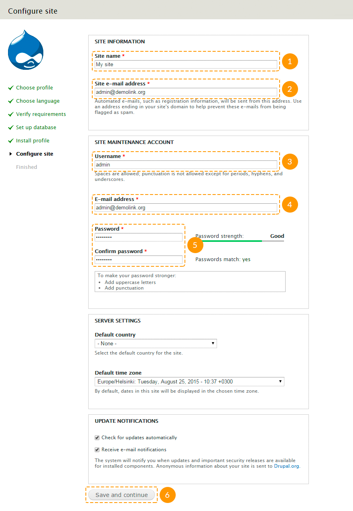
3. Зарегистрируйте администратора сайта
-
3. Перейдите на установленный сайт.
- Нажмите на ссылку Visit your new site (Посетите свой новый сайт) или в адресной строке браузера наберите http://www.example.com/?q=user/login, где www.example.com - адрес вашего сайта. Для входа на сайт используйте имя пользователя и пароль, указанные в предыдущем шаге.
- В панели администрирования сайта перейдите на страницу Appearance (Оформление) либо в адресной строке браузера наберите http://www.example.com/?q=admin/appearance, где www.example.com - адрес вашего сайта.
- Найдите только что добавленную тему и нажмите кнопку Enable and set default (Активировать и установить по умолчанию).

- Если на втором шаге вы скопировали папки с модулями, зайдите на страницу Modules (Модули) в панели администрирования сайта либо в адресной строке браузера наберите http://www.example.com/?q=admin/modules, где www.example.com - адрес вашего сайта. Активируйте добавленные модули. Для более подробной информации смотрите раздел "Настройка модулей".
Вы можете просмотреть следующие инструкции:
Установка темы с демонстрационными данными на существующий сайт
Установка темы с демонстрационными данными заменит все существующее содержимое и настройки вашего сайта на собственные!
Мы настоятельно рекомендуем вам создать резервную копию базы данных Drupal перед установкой темы с использованием снапшота.
Если у вас уже есть работающий сайт на Drupal, но вы все же хотите установить тему с демонстрационными данными, выполните следующие действия:
- Скопируйте содержимое папки sample_data/sites/all/ из архива с шаблоном в папку sites/all/ Drupal-сайта на вашем сервере.
- Скопируйте содержимое папки sample_data/sites/default/ из архива с шаблоном в папку sites/default/ Drupal-сайта на вашем сервере.
Будьте осторожны с заменой файлов! Ни в коем случае не заменяйте файлы settings.php и default.settings.php, иначе вам придется устанавливать Drupal заново!
- Войдите на сайт в качестве администратора.
- В панели администрирования сайта зайдите на страницу Configuration → File system (Настройки → Файловая система) или перейдите по ссылке http://www.example.com/?q=admin/config/media/file-system, где www.example.com - адрес вашего сайта.
- В поле Private file system path (Конфиденциальный путь файловой системы) установите значение sites/default/private/files.
- Зайдите на страницу Modules (Модули) панели администрирования или перейдите по ссылке http://www.example.com/?q=admin/modules, где www.example.com - адрес вашего сайта.
- Убедитесь, что модуль Demonstration site включен.
- Зайдите на страницу Structure → Snapshots (Структура → Снапшоты) панели администрирования и перейдите на вкладку Reset (Восстановить) или перейдите по ссылке http://www.example.com/?q=admin/structure/demo/reset, где www.example.com - адрес вашего сайта.
- Выберите снапшот theme###, где ### - номер приобретенной вами темы.

- Нажмите кнопку Reset (Восстановить). Затем подтвердите действие.
- Войдите на сайт в качестве администратора.
Чтоб зайти на сайт в качестве администратора после установки демонстрационных данных, используйте имя пользователя admin и пароль admin123. В целях безопасности мы рекомендуем вам сменить пароль сразу же после установки.
- Последнее, что необходимо сделать, - обновить таблицы базы данных. В адресной строке браузера введите http://www.example.com/update.php, где www.example.com - адрес вашего сайта.
- Следуйте инструкциям на экране.
- После обновления перейдите по одной из ссылок: Front page (Главная страница сайта) или Administration pages (Панель администрирования сайта).
Вы можете просмотреть следующие инструкции:
Установка темы без демонстрационных данных на существующий сайт
Для установки темы без демонстрационных данных на существующий сайт выполните следующие указания:
- Скопируйте содержимое папки sample_data/sites/all/themes/ из архива с шаблоном в папку sites/all/themes/ Drupal-сайта на вашем сервере.
Обратите внимание, что некоторые элементы шаблона реализованы с помощью модулей. На данном этапе установки модули не подключаются, поэтому внешний вид и функционал темы может несколько отличаться от того, что вы видели на странице предварительного просмотра шаблона.
- Для установки модулей вам необходимо скопировать папки sample_data/sites/all/modules/ и sample_data/sites/all/libraries/ из архива с шаблоном в папку sites/all/ Drupal-сайта на вашем сервере. Если вы не хотите устанавливать использованные в шаблоне модули, пропустите данный шаг.
- Войдите на свой сайт в качестве администратора.
- В панели администрирования сайта перейдите на страницу Appearance (Оформление) либо в адресной строке браузера наберите http://www.example.com/?q=admin/appearance, где www.example.com - адрес вашего сайта.
- Найдите только что добавленную тему и нажмите кнопку Enable and set default (Активировать и установить по умолчанию).
- Если на втором шаге вы добавили папки с модулями, зайдите на страницу Modules (Модули) в панели администрирования сайта либо в адресной строке браузера наберите http://www.example.com/?q=admin/modules, где www.example.com - адрес вашего сайта. Активируйте добавленные модули. Для более подробной информации смотрите раздел "Настройка модулей"
Вы можете просмотреть следующие инструкции:
Настройки Все тонкости настройки компонентов сайта
Сайт на основе Drupal содержит множество настроек как сайта в целом, так и отдельных его элементов. В данном разделе будут рассмотрены лишь основные виды настроек.
Настройки сайта
Просмотреть полный список настроек вы можете зайдя на страницу Configuration (Настройки) панели администрирования сайта либо набрав в адресной строке браузера http://www.example.com/?q=admin/config, где www.example.com - адрес вашего сайта.
Чтоб изменить основные настройки сайта, выполните следующие инструкции:
- Зайдите на страницу Configuration → System → Site information (Настройки → Система → Информация о сайте) панели администрирования сайта либо наберите в адресной строке браузера http://www.example.com/?q=admin/config/system/site-information, где www.example.com - адрес вашего сайта.
-
Измените необходимые параметры:
- название сайта;
- слоган сайта;
- электронный адрес сайта;
- количество постов на странице блога (или на главной странице, если у вас есть посты, прикрепленные к главной);
- адрес главной страницы сайта;
- адрес страницы 403 (доступ запрещен);
- адрес страницы 404 (страница не найдена).

- После внесения необходимых изменений, нажмите кнопку Save configuration (Сохранить настройки).
Настройки темы
Каждая тема имеет набор собственных настроек.
Чтобы изменить настройки темы, выполните следующие действия:
- В панели администрирования сайта зайдите на страницу Appearance (Оформление) либо в адресной строке браузера наберите http://www.example.com/?q=admin/appearance, где www.example.com - адрес вашего сайта.
- Нажмите на ссылку Settings (Настройки) под именем вашей темы:

-
На вкладке General Settings (Общие настройки) вы можете задать следующие параметры:
- отобразить/скрыть логотип, название сайта, слоган, аватары авторов постов, аватары авторов комментариев, состояние проверки авторов комментариев, иконку для избранного, главное и вспомогательное меню;
- использовать логотип по умолчанию (из темы) или загрузить собственный;
- использовать иконку для избранного (фавикон) по умолчанию (из темы) или загрузить собственную;
- закрепить меню вверху окна браузера.

-
На вкладке Breadcrumb Settings (Настройки "хлебных крошек") вы можете задать следующие параметры:
- отобразить/скрыть "хлебные крошки";
- отобразить/скрыть "хлебные крошки", если они содержат только ссылку на главную страницу сайта;
- задать разделитель между ссылками "хлебных крошек".

-
На вкладке Regions Settings (Настройки регионов) вы можете задать следующие настройки:
- задать изображение на фон региона, а также включить эффект параллакса;
- задать YouTube-видео на фон региона, а также задать, с какой секунды необходимо воспроизводить видео;
- растянуть содержимое блока на всю ширину экрана (т.е. убрать грид-сетку).

Некоторые из данных опций работают только с включенным модулем TM Block Background.
- На вкладке Blog Settings (Настройки блога) вы можете задать заголовок блока. Оставьте данное поле пустым, чтобы заголовок блога совпадал с названием соответствующей ссылки меню.

- На вкладке Custom CSS (Пользовательский CSS) вы можете задать собственные стили для установленной темы.
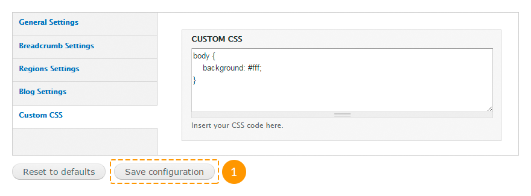
Данная опция относится только к приобретенной вами теме. Вы не сможете задать стили для других тем, таких как Seven и прочих.
Настройки модулей
Стандартные модули:
| Название | Описание | |
|---|---|---|
| Aggregator | Позволяет собирать содержимое с новостных лент других сайтов и публиковать полученные данные. | |
| Block |
Управляет визуальным расположением блоков в регионах страниц. Обязательный к подключению. Содержимое шаблонов основано на блоках. |
|
| Blog |
Позволяет пользователям вести свои блоги. Блог каждого пользователя состоит из отдельных записей. Рекомендуемый к подключению. В шаблонах используется блог, однако, если вы не планируете его использование, модуль можно отключить. |
|
| Book | Позволяет объединять записи в книги. Книги являются удобным способом организации записей. На страницах, которые включены в книгу, показываются дополнительные элементы навигации: ссылки для перехода на предыдущую и следующую страницы, а также ссылка для перехода к той главе, в которую входит текущая страница. | |
| Color | Позволяет легко и быстро изменять цветовые схемы тем, которые совместимы с этим модулем. | |
| Comment |
Позволяет пользователям добавлять комментарии к записям и отвечать на комментарии других пользователей. Рекомендуемый к подключению. В шаблонах используется комментарии к записям, однако, если вы не планируете их использовать, модуль можно отключить. |
|
| Contact |
Позволяет посетителям сайта отправлять сообщения администратору, пользуясь формой контактов сайта, или другим пользователям, пользуясь персональными формами контактов пользователей. Рекомендуемый к подключению. В шаблонах используется форма контактов, однако, если вы не планируете ее использовать, модуль можно отключить. |
|
| Content translation | Позволяет переводить материал сайта на разные языки. Работает вместе с модулем Locale. | |
| Contextual links |
Позволяет показывать контекстные ссылки, связанные с регионами, блоками и записями. Рекомендуемый к использованию. Модуль включен для удобства работы, т.к. позволяет быстро редактировать содержимое шаблона. Также ниже использованы рекомендации по редактированию содержимого на основании данного модуля. Если для вас это не принципиально, модуль можно отключить. |
|
| Dashboard | Создаёт информационную панель в разделе управления сайтом для организации административных задач и отслеживание информации на вашем сайте. На странице панели могут быть размещены и упорядочены нужным образом блоки. | |
| Database logging | Позволяет записывать системные события в базу данных. | |
| Field |
Позволяет добавлять различным типам материалов, пользователям и терминам дополнительные поля и обрабатывать их сохранение, загрузку, редактирование и вывод. Обязательный к подключению. Необходим для работы ядра сайта. |
|
| Field SQL storage |
Управляет хранением информации о дополнительных полях в базе данных. Обязательный к подключению. Необходим для работы ядра сайта. |
|
| Field UI |
Реализует интерфейс по работе с прикреплением дополнительных полей к объектам и управлением ими. Обязательный к подключению. Во многих типах материалов используются дополнительные поля. |
|
| File |
Определяет файловый тип поля, который позволяет управлять файлами, прикрепленными к записи. Обязательный к подключению. Во многих типах материалов используются прикрепленные файлы (например, изображения). |
|
| Filter |
Позволяет настраивать различные форматы ввода. Формат ввода определяет разрешенные в материале HTML-теги, правила обработки введенных данных и другие параметры. Обязательный к подключению. Необходим для работы ядра сайта. |
|
| Forum |
Позволяет создавать на сайте форумы и вести на нём обсуждения различных вопросов. Форумы могут иметь вложенную иерархию, позволяя группировать обсуждения по темам. Рекомендуемый к подключению. В демонстрационных данных шаблона есть форум, однако, если вы не планируете его использовать, модуль можно отключить. |
|
| Help | Позволяет создавать справочные страницы, а также показывать контекстную справку на страницах управления сайтом. Это краткая версия сетевого руководства, которая включена в систему. | |
| Image |
Добавляет поле для изображений. Модуль использует параметры, определённые на страницах «Обработка изображений» и «Стили изображений», с помощью которых можно изменять размер и параметры вывода. Обязательный к подключению. Во многих типах материалов использованы прикрепленные изображения. |
|
| List |
Определяет различные поля для хранения списков. Рекомендуемый к подключению. В некоторых шаблонах может быть использован тип поля список. Не отключайте данный модуль, если вы не уверены. |
|
| Locale |
Позволяет использовать на сайте интерфейс на различных языках. Модуль управляет переводами строк интерфейса в базе данных, проверяя наличие перевода каждой нужной строки перед её выводом на монитор. Если строка с переводом доступна, то она показывается вместо оригинальной строки. Когда строка с переводом недоступна, показывается оригинальная строка на английском языке, что позволяет избежать отсутствия на сайте каких-либо элементов, если они не переведены. Рекомендуемый к подключению. В шаблонах по умолчанию включена возможность перевода содержимого. Однако, если вы не планируете добавлять языки перевода, модуль можно отключить. |
|
| Menu |
Позволяет создавать навигационные блоки (меню). Обязательный к подключению. В шаблонах используется как минимум одно меню. |
|
| Node |
Управляет созданием, правкой, удалением, параметрами и выводом записей. Обязательный к подключению. Необходим для работы ядра сайта. |
|
| Number |
Определяет различные типы числовых полей. Числа могут быть целыми или дробными и иметь различный формат вывода. Числовые поля могут быть ограничены определённым набором доступных для ввода значений или диапазоном значений. Рекомендуемый к подключению. В некоторых шаблонах может быть использован числовой тип поля. Не отключайте данный модуль, если вы не уверены. |
|
| OpenID | Позволяет пользователям входить в свои учетные записи с помощью технологии OpenID. Технология OpenID является безопасным способом создания учетных записей на разных сайтах с использованием одного логина и пароля. | |
| Options |
Определяет селекторы, флажки и радио-кнопки для текстовых и числовых полей. Обязательный к подключению. Используется в дополнительных типах полей, для таксономии, для облака тэгов и пр. |
|
| Overlay | Отображает административные страницы сайта во всплывающем окне. | |
| Path |
Позволяет добавить любому системному пути на сайте альтернативный путь. Для каждого системного адреса может использоваться неограниченное количество альтернативных адресов. Рекомендуемый к подключению. В шаблонах по умолчанию включена возможность добавления альтернативных путей. Однако, если вы не планируете их использовать, модуль можно отключить. |
|
| PHP filter |
Добавляет PHP filter в форматы ввода. Этот фильтр позволяет выполнять введенный PHP-код. Обязательный к подключению. В некоторых блоках используется PHP-код (например, в блоке копирайта). |
|
| Poll |
Позволяет создавать опросники и проводить исследования с выводом общего итога голосования. Рекомендуемый к подключению. В демонстрационном содержимом шаблонов присутствует опросник, однако, если вы не планируете его использовать или создавать новые, модуль можно отключить. |
|
| RDF | Обогащает содержимое сайта метаданными, чтобы другие приложения (например, поисковые системы, агрегаторы) могли лучше понять существующие связи и атрибуты. | |
| Search |
Позволяет индексировать содержимое сайта и выполнять поиск по ключевым словам на страницах и записях или по именам пользователей. Рекомендуемый к подключению. В шаблонах по умолчанию включена возможность поиска материала и пользователей, однако, если вы не планируете использование данного функционала, модуль можно отключить. |
|
| Shortcut | Позволяет пользователям создавать наборы ярлыков для часто посещаемых страниц сайта. Ярлыки находятся в наборах. Пользователь может выбрать себе любой существующий на сайте набор ярлыков. | |
| Statistics |
Позволяет собирать информацию о количестве просмотров записей, просматривавшем страницу пользователе, странице, с которой пользователь перешел на страницу записи, и времени, когда документ просматривался. Эта информация может быть полезна для выяснения того, какие документы пользователи предпочитают просматривать, и как они перемещаются по сайту. Рекомендуемый к подключению. Если в блоге выводится количество просмотров записи, не отключайте данный модуль. |
|
| Syslog | Отслеживает и записывает системные события в системный журнал. | |
| System |
Обеспечивает основные характеристики сайта, которые могут также расширяться другими модулями и темами. Многие основные элементы сайта управляются именно этим модулем (например, кеширование, включение и выключение модулей и тем, генерация страниц управления и настройка основных параметров сайта). Этот модуль занимается также обработкой многих ключевых для работы сайта операций. Обязательный к подключению. Необходим для работы ядра сайта. |
|
| Taxonomy |
Позволяет классифицировать материал сайта. Для этого нужно определить словари, которые будут содержать термины. Термины можно связывать с различными объектами содержания. Обязательный к подключению. В шаблоне используются поля, основанные на таксономии. |
|
| Testing | Обеспечивает основу для тестирования функционала сайта. | |
| Text |
Определяет текстовый тип поля. Обязательный к подключению. Необходим для работы ядра сайта. |
|
| Toolbar |
Показывает ссылки первого уровня меню управления сайтом и ссылки других модулей вверху страницы. Рекомендуемый к подключению. В шаблонах по умолчанию включено верхнее меню навигации по административным страницам, однако, если вы не планируете его использовать, модуль можно отключить. |
|
| Tracker |
Позволяет отслеживать изменения в содержимом сайта. Модуль показывает информацию о добавленных и обновлённых материалах и о добавленных к материалу комментариях. Рекомендуемый к подключению. В шаблонах по умолчанию включена возможность отслеживания изменений в содержимом сайта. Однако, если вы не нуждаетесь в данном функционале, модуль можно отключить. |
|
| Trigger |
Позволяет вызывать действия при возникновении определённых системных событий, таких как добавление нового материала или вход пользователя в учетную запись. Рекомендуемый к подключению. Используется для для блока подписки (см. "Дополнительные модули"). Если вы не планируете его использовать, можете отключить данные блоки. |
|
| Update manager |
Периодически проверяет новые версии установленных на сайте модулей и тем и оповещает администраторов сайта о доступности обновлений. Кроме этого модуль позволяет устанавливать новые модули и темы, пользуясь только интерфейсом сайта. Рекомендуемый к подключению. В шаблонах по умолчанию включена возможность обновления и установки модулей. Мы не рекомендуем вам отключать данный модуль. |
|
| User |
Позволяет регистрироваться на сайте и управлять учетными записями. Модуль также позволяет управлять ролями пользователей и их правами. Обязательный к подключению. Необходим для работы ядра сайта. |
- модуль по умолчанию включен; - модуль по умолчанию отключен.
Модули, которые не отмечены как обязательные или рекомендуемые к подключению, могут быть подключены или отключены в зависимости от того, будете ли вы использовать их функционал.
Отключение модулей, отмеченных как рекомендуемые к подключению, нежелательно, однако не критично.
Дополнительные модули:
| Название | Пакет | Описание | |
|---|---|---|---|
| AddThis | addthis |
Добавляет блок кнопок "Поделиться в социальных сетях" от AddThis.com. Рекомендуемый к подключению. В демонстрационных данных шаблона кнопки "Поделиться в социальных сетях" используется на страницах блога. |
|
| AddThis Displays | |||
| Administration Development tools | admin_menu |
Внедряет верхнее выпадающее меню для большинства административных задач. Рекомендуемый к подключению. В шаблонах альтернативное административное выпадающее меню используется для удобства навигации по административной панели. Если вы не пользуетесь данным функционалом, модуль можно отключить. |
|
| Administration menu | |||
| Administration menu Toolbar style | |||
| Block Class | block_class |
Позволяет добавлять пользовательские классы блокам. Рекомендуемый к подключению. С помощью пользовательских классов блокам добавляется не только стилизация, но и классы грид-системы. |
|
| Cctags | cctags |
Позволяет создавать облако тегов из терминов таксономии. Рекомендуемый к подключению. В демонстрационных данных шаблонов есть облако тэгов, однако, если вы не планируете его использовать, модуль можно отключить. |
|
| Colorbox | colorbox |
Позволяет открывать изображения в лайтбоксах. Рекомендуемый к подключению. На странице портфолио (галереи, сервисов) изображения открываются в лайтбоксах. |
|
| Bulk Export | ctools |
Представляет из себя API и набор инструментов, которые позволяют облегчить работу разработчика. Модуль также управляет страницами панелей и другими элементами. Обязательный к подключению. Большинство модулей работают на основании данного модуля. |
|
| Chaos tools | |||
| Chaos Tools (CTools) AJAX Example | |||
| Chaos Tools (CTools) Plugin Example | |||
| Custom content panes | |||
| Custom rulesets | |||
| Page manager | |||
| Page manager redirect | |||
| Page manager redirect examples | |||
| Stylizer | |||
| Term Depth access | |||
| Views content panes | |||
| Date | date |
Позволяет создавать дополнительные поля типа дата/время. Также служит основой для других модулей. Рекомендуемый к подключению. Чтобы отключить данный модуль, убедитесь, что в демонстрационных данных нет полей типа дата/время. |
|
| Date All Day | |||
| Date API | |||
| Date Context | |||
| Date Popup | |||
| Date Repeat API | |||
| Date Repeat Field | |||
| Date Tools | |||
| Date Views | |||
| Date Migration Example | |||
| Demonstration site | demo |
Позволяет делать снапшоты сайта. Используя этот модуль, вы всегда можете вернуть состояние сайта к сделанному ранее его снапшоту. Рекомендуемый к подключению. С помощью данного модуля вы сможете установить демонстрационные данные, а также настройки всех модулей и блоков. |
|
| Demonstration site reset | |||
| Dismiss | dismiss |
Добавляет кнопку "Закрыть" к системным сообщениям, предупреждениям и ошибкам. Рекомендуемый к использованию. В шаблонах данный модуль используется для удобства, однако, если вы не планируете пользоваться данным функционалом, модуль можно отключить. |
|
| Entity view modes | entity_view_mode |
Позволяет создавать дополнительные режимы отображения объектов (комментариев, записей, файлов, пользователей, таксономии). Рекомендуемый к подключению. В шаблонах дополнительные режимы отображения используются для медиа-файлов записей блога. |
|
| FlexSlider | flexslider |
Позволяет интегрировать с Drupal библиотеку Flex Slider. Рекомендуемый к подключению. Используется для создания слайдера и всякого рода каруселей. |
|
| FlexSlider Example | |||
| FlexSlider Fields | |||
| FlexSlider Views Style | |||
| Flex Slider Views Slideshow | flexslider_views_slideshow |
Интеграция библиотеки FlexSlider с Views Slideshow. Рекомендуемый к подключению. Используется для создания слайдера и всякого рода каруселей. |
|
| jQuery Easing | jqeasing |
Добавляет библиотеку jQuery Easing. Обязательный к подключению. Необходим для правильной работы темы, а также некоторых модулей. |
|
| jQuery Update | jquery_update |
Обновляет версию jQuery, которая включена в Drupal. Обязательный к подключению. Необходим для правильной работы темы и большинства модулей. Не используйте версию jQuery выше 1.8, т.к. некоторые плагины (например, Superfish) не могут работать полноценно с последними версиями скрипта. |
|
| Libraries | libraries |
Позволяет добавлять внешние библиотеки для модулей, тем и профилей. Обязательный к подключению. Многие модули пользуются библиотеками. |
|
| Link | link |
Позволяет создавать дополнительные поля, предназначенные для вставки ссылок. Рекомендуемый к подключению. Ссылки используется в некоторых типах материала (например, в типе материала "Сотрудник"). |
|
| File entity | media |
Дает возможность загружать файлы без FTP, создавать и управлять медиа-библиотеками на вашем сайте. Рекомендуемый к подключению. В шаблонах данный модуль используется в качестве файлового загрузчика для изображений, а также для добавления видео к записям блога. |
|
| Media | |||
| Media Internet Sources | |||
| Media: YouTube | media_youtube |
Вместе с модулем Media позволяет добавлять в материал видео с сервиса YouTube. Рекомендуемый к подключению. В демонстрационном содержимом шаблонов присутствует видео с YouTube, однако, если вы не планируете пользоваться данным сервисом, модуль можно отключить. |
|
| Menu Block | menu_block |
Позволяет создавать древовидные блоки меню, выводить которые можно с любого уровня. Рекомендуемый к подключению. С помощью данного модуля в шаблонах, как правило, создается меню подвала. |
|
| Menu Block Export | |||
| Module filter | module_filter |
Позволяет упростить работу со страницей модулей. Модуль добавляет строку живого поиска модулей, а также позволяет вынести категории модулей в вертикальную линейку. Рекомендуемый к подключению. В шаблонах данный модуль используется для удобства, в частности для быстрого поиска и настройки модулей. |
|
| Olark Chat | olark |
Добавляет возможность вставки чата от Olark. Рекомендуемый к подключению. С помощью данного модуля подключается чат. |
|
| Mini panels | panels |
Позволяет создавать макеты и размещать их на страницах сайта. Рекомендуемый к подключению. С помощью данного модуля создано большинство основных страниц шаблона. |
|
| Panel nodes | |||
| Panels | |||
| Panels In-Place Editor | |||
| Panels translation | |||
| Plupload integration module | plupload |
Позволяет загружать несколько изображений одновременно. Рекомендуемый к подключению. Данный модуль в шаблонах включен для удобства загрузки изображений. |
|
| Retina Images | retina_images |
Позволяет нарезать изображения для retina-экранов в размере 2,5x. Рекомендуемый к подключению. В демонстрационных данных шаблонов все изображения нарезаны для retina-экранов. |
|
| Semantic Views | semanticviews |
Является дополнением к модулю Views, которое позволяет сделать HTML-код выводимой структуры представления более читаемым. Рекомендуемый к подключению. В демонстрационном содержимом некоторые представления созданы с помощью данного модуля. |
|
| Shortcode | shortcode |
Обеспечивает API для вставки шоткодов, а также добавляет набор основных шоткодов. Рекомендуемый к подключению. Модуль позволяет вставлять тип содержимого, которого нет в стандартных инструментах. |
|
| Shortcode Basic Tags | |||
| Shortcode Embed Content Tag | |||
| Shortcode Video Macro | |||
| Simple Subscription | simple_subscription |
Добавляет блок формы подписки. Рекомендуемый к подключению. В демонстрационных данных шаблонов присутствует блок формы подписки, однако, если вы не планируете ее использовать, модуль можно отключить. |
|
| Superfish | superfish |
Интегрирует с Drupal плагин jQuery Superfish, с помощью которого можно создавать выпадающее меню. Рекомендуемый к подключению. Выпадающее меню используется в главном меню сайта. |
|
| Term Reference Tree | term_reference_tree |
Позволяет отображать термины таксономии в виде дерева. Рекомендуемый к подключению. Категории портфолио и блога отображаются в виде дерева. Вы можете изменить отображение данных полей в настройках соответствующих типов материалов и отключить данный модуль, если вы не нуждаетесь в данном функционале. |
|
| Tipsy tooltips | tipsy |
Интегрирует с Drupal плагин Tipsy, который позволяет показывать всплывающие подсказки для текстовых областей, полей, якорей и других HTML-элементов, которые можно определить самостоятельно. Рекомендуемый к подключению. Всплывающие подсказки используются для формы контактов на странице контактов. Если вы не планируете использовать данный функционал, модуль можно отключить. |
|
| TM Animate | tm_animate |
Добавляет кросс-браузерную библиотеку CSS-анимаций. Обязательный к подключению. В некоторых темах могут использоваться классы анимации. |
|
| TM Block Background | tm_block_bg |
Позволяет добавлять эффекты и видео и параллакса на фоне блоков. Обязательный к подключению. Модуль позволяет использовать эффекты параллакса и видео на фоне из опций купленной вами темы. |
|
| TM Cookie Notice | tm_cookie_notice |
Добавляет оповещение об использовании куков на сайте. Рекомендуемый к подключению. Согласно Закону о Кукис, модуль позволяет оповещать пользователей об использовании куков. |
|
| TM Follow Us | tm_follow |
Создает два блока ссылок, которые связывают сайт и его пользователей с сайтами социальных сетей. Рекомендуемый к подключению. В демонстрационном содержимом шаблонов присутствует блок социальных ссылок, однако, если вы не планируете использовать данный блок, модуль можно отключить. |
|
| TM Font Awesome | tm_font_awesome |
Внедряет знаковый шрифт, используемый в Twitter Bootstrap. Весия FontAwesome 4.1.0. Обязательеый к подключению. В стилизации темы используются шрифтовые иконки. |
|
| TM Lazyload | tm_lazyload |
Позволяет подгружать изображения по мере прокрутки страницы. Рекомендуемый к подключению. Постепенная подгрузка изображений включена на бложных страницах. |
|
| TM Shortcodes | tm_shortcodes |
Добавляет набор шоткодов. Рекомендуемый к подключению. Модуль позволяет вставлять тип содержимого, которого нет в стандартных инструментах. |
|
| Hide the Toolbar | toolbar_admin_menu |
Скрывает стандартное верхнее административное меню. Рекомендуемый к подключению. Если вы не используете модуль Administration menu, данный модуль можно отключить. |
|
| Views | views | Позволяет создавать запросы, выполнять их и выводить полученный результат разнообразными способами. Рекомендуемый к подключению. Значительная часть демонстрационного содержимого создана по средствам представлений. | |
| Views UI | |||
| Views Accordion | views_accordion |
Позволяет создавать представления в виде аккордеона. Рекомендуемый к подключению. Чтобы отключить данный модуль, убедитесь, что в демонстрационных данных вашего шаблона нет аккордеонов. |
|
| Isotope Example | views_isotope |
Позволяет создавать представления с помощью библиотеки Isotope. Рекомендуемый к подключению. Страница портфолио (галереи, сервисов) создана с помощью библиотеки Isotope. |
|
| Views Isotope | |||
| Views Slideshow | views_slideshow |
Позволяет создавать представления в виде слайдшоу. Рекомендуемый к подключению. Чтобы отключить данный модуль, убедитесь, что в демонстрационных данных вашего шаблона нет представлений, созданных на основании данного модуля. |
|
| Views Slideshow: Cycle | |||
| Wysiwyg | wysiwyg |
Позволяет интегрировать с сайтом различные текстовые редакторы. Рекомендуемый к подключению. Данный модуль включен для удобства вставки разного рода содержания в записи. |
- модуль по умолчанию включен; - модуль по умолчанию отключен.
Модули, отмеченные как обязательные к подключению, должны быть загружены в обязательном порядке.
Модули, отмеченные как рекомендуемые к подключению, должны быть загружены в обязательном порядке, если вы устанавливаете шаблон с демонстрационными данными.
Те модули, которые включены для удобства, могут быть отключены на ваше усмотрение.
Каждый из модулей может содержать собственные настройки. Чтобы настроить модуль, выполните следующие инструкции:
- Войдите на сайт в качестве администратора.
- В панели администрирования зайдите на страницу Modules (Модули) или в адресной строке браузера наберите http://www.example.com/?q=admin/modules, где www.example.com - адрес вашего сайта.
- Найдите нужный вам модуль. Для этого можете воспользоваться фильтром.
- Нажмите ссылку Configure (Настроить) напротив нужного вам модуля.

- Сделайте необходимые изменения и сохраните настройки.
Вы также можете посмотреть следующие инструкции:
Настройки блоков
Чтобы настроить блоки, использованные в шаблоне, следуйте данным инструкциям:
- Войдите на сайт в качестве администратора.
- В панели администрирования зайдите на страницу Structure → Blocks (Структура → Блоки) или в адресной строке браузера наберите http://www.example.com/?q=admin/structure/block, где www.example.com - адрес вашего сайта.
- На открывшейся странице вы можете перетаскивать блоки в разные регионы:
- Вы можете перемещать блоки в разные регионы, используя выпадающее меню в колонке Region (Регион):

- Вы можете задать настройки для каждого блока в отдельности, нажав на ссылку configure (настроить) в колонке Operations (Операции):
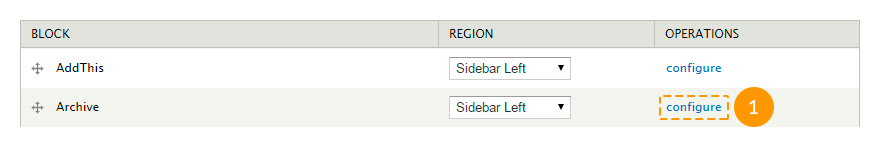
-
На странице настроек блока вы можете задать следующие параметры:
- заголовок блока;
- пользовательский CSS-класс для данного блока;
- регион блока для каждой темы в отдельности;
- настройки отображения (для отдельных страниц, отдельных типов материалов, отдельных ролей пользователей, для каждого пользователя);
- настроить фон блока (аналогично настройкам регионов в опциях темы).

Помните, что блок занимает ширину региона, в который он помещен. Для того, чтобы блок с эффектом параллакса или с видео на фоне занимал всю ширину экрана, необходимо поместить его в регион с опцией Fullwidth (На всю ширину экрана).
Некоторые блоки могут содержать дополнительные настройки.
- Вы также можете попасть на страницу настроек блока со страниц вашего сайта. Для этого наведите курсор мышки на нужный вам блок, затем нажмите на пиктограмму шестеренки в правом верхнем углу блока и выберите пункт Configure block (Настроить блок). Эта опция будет доступна только, если вы войдете на сайт в качестве администратора:

Настройки кнопок "Поделиться"
За включение/отключение блока кнопок "Поделиться в социальных сетях" отвечает модуль AddThis.
Чтобы изменить глобальные настройки блока "Поделиться в социальных сетях", в панели администрирования зайдите на страницу Configuration → User interface → AddThis (Конфигурация → Пользовательский интерфейс → AddThis) или в адресной строке браузера наберите http://www.example.com/?q=admin/config/user-interface/addthis, где www.example.com - адрес вашего сайта.
Данные настройки в большей мере относятся к блоку "AddThis", которым вы можете управлять как обычным блоком.
Не меняйте ничего в настройках, если вы не уверены.
Чтобы изменить настройки блока "Поделиться в социальных сетях" в типе содержимого Blog Entry (Запись блога), выполните следующие инструкции:
- В панели администрирования зайдите на страницу Structure → Content types → Blog entry (Структура → Типы материалов → Запись блога) и перейдите на вкладку Manage display (Управление отображением) или в адресной строке браузера наберите http://www.example.com/?q=admin/structure/types/manage/blog/display, где www.example.com - адрес вашего сайта.
- Выберите пункт Full content (Полная страница).
- Нажмите на пиктограмму шестеренки напротив поля AddThis.
- Измените набор иконок (полный список доступен на www.addthis.com, через запятую укажите необходимые значения из колонки Code), размер иконок, ориентацию, при необходимости укажите дополнительный класс. Нажмите кнопку Update (Обновить).

Чтобы удалить кнопки "Поделиться" из типа содержимого Blog Entry (Запись блога), выполните следующие инструкции:
- В панели администрирования зайдите на страницу Structure → Content types → Blog entry (Структура → Типы материалов → Запись блога) и перейдите на вкладку Manage fields (Управление полями) или в адресной строке браузера наберите http://www.example.com/?q=admin/structure/types/manage/blog/fields, где www.example.com - адрес вашего сайта.
- Нажмите на ссылку delete (удалить) напротив поля AddThis, после чего подтвердите действие.

Чтобы добавить кнопки "Поделиться" в любой другой тип материала, выполните следующие действия:
- В панели администрирования зайдите на страницу Structure → Content types → Content type name (Структура → Типы материалов → Имя типа материала), где Content type name - имя необходимого типа материала.
- Перейдите на вкладку Manage fields (Управление полями)
-
В строке Add new field (Добавить новое поле) введите следующие параметры:
- label - имя поля, любое удобное для вас название;
- машинное имя - служебное название поля, генерируется автоматически, однако при необходимости вы можете изменить его;
- type of data to store - тип данных, здесь необходимо выбрать AddThis;
- form element to edit the data - тип элемента формы для управления полем, выберите AddThis button.
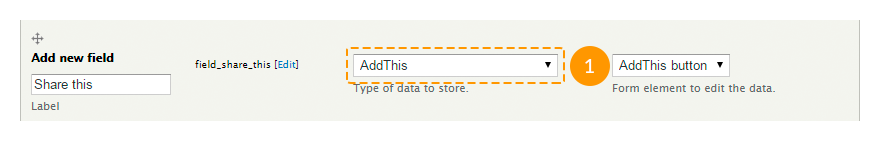
- Нажмите кнопку Save (Сохранить).
- Для настройки внешнего вида кнопок выполните действия, аналогичные действиям при настройке кнопок "Поделиться" для типа материала Blog entry (Запись блога).
Настройка и использование анимации
За включение/отключение анимации отвечает модуль TM Animate. Также, в зависимости от того, где вы собираетесь использовать анимации, вам может понадобиться модуль Block class или Views.
Чтобы повесить анимацию на один из блоков, выполните следующее действия:
- В панели администрирования зайдите на страницу Structure → Blocks (Структура → Блоки) или в адресной строке браузера наберите http://www.example.com/?q=admin/structure/block, где www.example.com - адрес вашего сайта.
- Напротив необходимого блока нажмите ссылку configure (настроить).
- В поле CSS class(es) (CSS-класс(ы)) добавьте через пробел два класса: wow, чтобы анимация проигрывалась, когда блок появляется в зоне видимости, и класс анимации.
- Сохраните сделанные изменения.
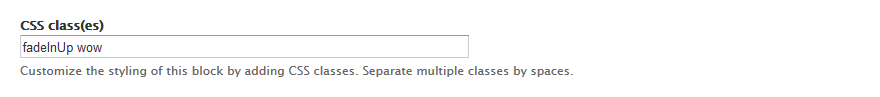
Чтобы повесить анимацию на одно из представлений, выполните следующее действия:
- В панели администрирования зайдите на страницу Structure → Views (Структура → Представления) или в адресной строке браузера наберите http://www.example.com/?q=admin/structure/views, где www.example.com - адрес вашего сайта.
- Напротив необходимого блока нажмите ссылку edit (редактировать).
Актуально только для представлений с форматом Semantic Views.
- В настройках напротив поля Format (Формат) нажмите на ссылку settings (Настройки).
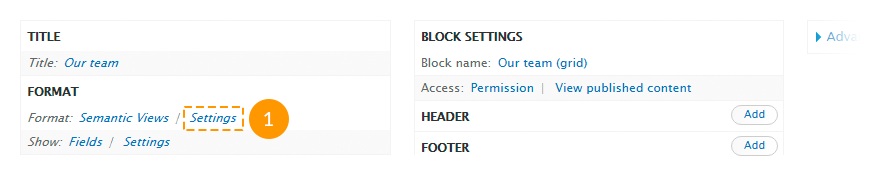
- В блоке Row (Ряд) найдите поле Class attribute (Атрибут класса) и введите в него класс анимации и класс wow.

- Нажмите кнопку Apply (Применить).
- Сохраните представление.
Все доступные классы можно посмотреть на daneden.github.io
Настройки блока социальных ссылок
За включение/отключение блока социальных ссылок отвечают модули TM Font Awesome и TM Follow Us.
Для настройки параметров блока социальных ссылок выполните следующие действия:
-
В панели администрирования зайдите на страницу Structure → Blocks (Структура → Блоки) или в адресной строке браузера наберите http://www.example.com/?q=admin/structure/block, где www.example.com - адрес вашего сайта.
Зайти в данные настройки также возможно, выбрав пункт Configure block (Настроить блок) контекстного меню блока социальных ссылок.

- Чтобы отобразить/скрыть данный блок на страницах пользователей, поставьте/уберите галочку в поле User pages (Страницы пользователей).
- Чтобы отобразить/скрыть подписи к социальным сетям, поставьте/уберите галочку в поле Display labels (Отображать метки).
- Чтобы отобразить ссылки вертикально или горизонтально, выберите соответствующий пункт в поле Alignment (Выравнивание).
- После того, как все изменения будут сделаны, нажмите кнопку Save block (Сохранить блок).

Для настройки дополнительных параметров отображения социальных ссылок выполните следующие действия:
-
В панели администрирования зайдите на страницу Configuration → TM Follow (Настройка → TM Follow) или в адресной строке браузера наберите http://www.example.com/?q=admin/config/tm_follow, где www.example.com - адрес вашего сайта.
Зайти в данные настройки также возможно, выбрав пункт Edit TM Follow links (Редактировать ссылки TM Follow) контекстного меню блока социальных ссылок.
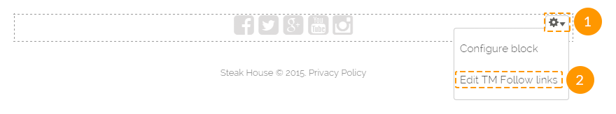
- Чтобы скрыть какую-либо из иконок социальных сетей, уберите ссылку из поля URL напротив необходимой социальной сети.
- Чтобы показать какую-либо из иконок социальных сетей, укажите ссылку на свой профиль в социальной сети в поле URL.
- Чтобы изменить значение подписи социальной сети, укажите новое значение в поле Customized name (Измененное имя) напротив необходимой социальной сети.
- После того, как все изменения будут сделаны, нажмите кнопку Submit (Подтвердить).

Социальные ссылки отдельного пользователя настраиваются аналогичным образом.
Для настройки блока социальных ссылок пользователя отредактируйте блок TM Follow User.
Для настройки дополнительных параметров отображения социальных ссылок отдельного пользователя выполните следующие действия:
- В панели администрирования зайдите на страницу People (Люди) или в адресной строке браузера наберите http://www.example.com/?q=admin/people, где www.example.com - адрес вашего сайта.
- Напротив необходимого пользователя нажмите ссылку edit (редактировать).
- Перейдите на вкладку TM Follow.
- Сделайте необходимые изменения и сохраните их.
Настройка подгрузки изображений (LazyLoad)
За включение/отключение постепенной подгрузки изображений отвечает модуль TM Lazy Load.
Для настройки постепенной подгрузки изображений выполните следующие действия:
- В панели администрирования зайдите на страницу Configuration → TM Lazyload (Настройка → TM Lazyload) или в адресной строке браузера наберите http://www.example.com/?q=admin/config/tm_lazyload, где www.example.com - адрес вашего сайта.
-
Внесите необходимые изменения в следующие поля:
- Enabled (Включен) - включить/отключить постепенную подгрузку изображений.
- Distance (Расстояние) - расстояние от изображения до видимой части окна браузера перед тем, как изображение загрузится.
- Placeholder Image (Изображение прелоадера) - путь к изображению прелоавдера. Оставьте пустым, чтоб использовать прелоадеры по умолчанию.
- Loader Icon (Иконка прелоадера) - доступные варианты прелоадеров.
- Excluded Pages (Исключенные страницы) - перечень страниц, на которых постепенная подгрузка изображений должна быть отключена.
- После того, как все необходимые изменения будут сделаны, нажмите кнопку Save (Сохранить).

Настройка параллакса
За включение/отключение эффекта параллакса для блоков отвечает модуль TM Block Background.
Создать блок с эффектом параллакса можно двумя способами.
Способ №1.
- Зайдите в настройки темы: в панели администрирования откройте страницу Appearance → Settings → Theme### (Внешний вид → Настройки → Theme###).
- Перейдите на вкладку Regions Settings (Настройки регионов).
- В подходящем регионе поставьте галочку в поле Fullwidth (На всю ширину экрана).
- Сохраните настройки.

- Создайте новый блок: в панели администрирования зайдите на страницу Structure → Blocks → Add block (Структура → Блоки → Добавить блок) или в адресной строке браузера наберите http://www.example.com/?q=admin/structure/block/add, где www.example.com - адрес вашего сайта.
- Поместите содержимое блока между тегами
<div class="container-12"><div class="grid-12">и</div></div>
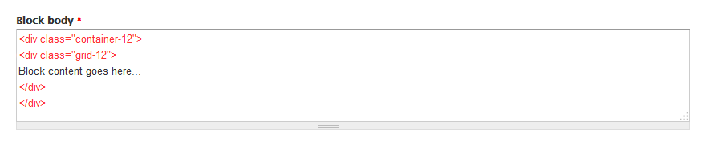
- В блоке Region settings (Настройка региона) в поле с установленной темой укажите регион, отредактированный в п.3.
-
В блоке TM Block background settings (TM настройки фона блока) укажите следующие значения:
- в поле Background type (Тип фона) укажите image (изображение);
- в поле Background image (Фоновое изображение) загрузите необходимое изображение или выберите его из библиотеки изображений;
- поставьте галочку в поле Use parallax (Использовать параллакс).
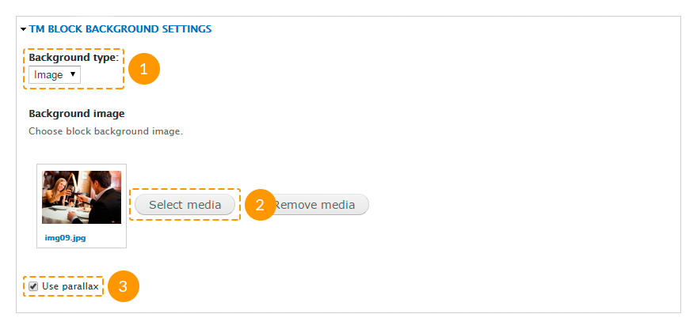
- Заполните прочие поля и сохраните сделанные изменения.
Способ №2.
- Зайдите в настройки темы: в панели администрирования откройте страницу Appearance → Settings → Theme### (Внешний вид → Настройки → Theme###).
- Перейдите на вкладку Regions Settings (Настройки регионов).
-
В подходящем регионе укажите следующие значения полей:
- в поле Background type (Тип фона) укажите image (изображение);
- в поле Background image URL (Путь к фоновому изображению) загрузите необходимое изображение или выберите его из библиотеки изображений;
- поставьте галочку в поле Use parallax (Использовать параллакс).
- Сохраните внесенные изменения.

- Перейдите на страницу Structure → Blocks (Структура → Блоки) или в адресной строке браузера наберите http://www.example.com/?q=admin/structure/block, где www.example.com - адрес вашего сайта.
- Поместите необходимый блок в данный регион.
- Сохраните сделанные изменения.
Настройка видео на фоне
За включение/отключение эффекта видео на фоне для блоков отвечает модуль TM Block Background.
Создать блок с эффектом видео на фоне можно двумя способами.
Способ №1.
- Зайдите в настройки темы: в панели администрирования откройте страницу Appearance → Settings → Theme### (Внешний вид → Настройки → Theme###).
- Перейдите на вкладку Regions Settings (Настройки регионов).
- В подходящем регионе поставьте галочку в поле Fullwidth (На всю ширину экрана).
- Сохраните настройки.
- Создайте новый блок: в панели администрирования зайдите на страницу Structure → Blocks → Add block (Структура → Блоки → Добавить блок) или в адресной строке браузера наберите http://www.example.com/?q=admin/structure/block/add, где www.example.com - адрес вашего сайта.
- Поместите содержимое блока между тегами
<div class="container-12"><div class="grid-12">и</div></div>
- В блоке Region settings (Настройка региона) в поле с установленной темой укажите регион, отредактированный в п.3.
-
В блоке TM Block background settings (TM настройки фона блока) укажите следующие значения:
- в поле Background type (Тип фона) укажите video (видео);
- в поле Background Video URL (Путь к фоновому видео) укажите ссылку на видео с YouTube;
- при необходимости в поле Start video at (Начать видео с) укажите с какой секунды начать проигрывать видео. Оставьте поле пустым, чтоб видео проигрывалось с начала.
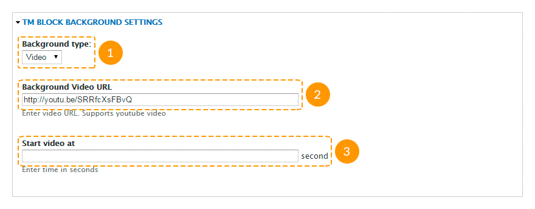
- Заполните прочие поля и сохраните сделанные изменения.
Способ №2.
- Зайдите в настройки темы: в панели администрирования откройте страницу Appearance → Settings → Theme### (Внешний вид → Настройки → Theme###).
- Перейдите на вкладку Regions Settings (Настройки регионов).
-
В подходящем регионе укажите следующие значения полей:
- в поле Background type (Тип фона) укажите video (видео);
- в поле Background Video URL (Путь к фоновому видео) укажите ссылку на видео с YouTube;
- при необходимости в поле Start video at (Начать видео с) укажите с какой секунды начать проигрывать видео. Оставьте поле пустым, чтоб видео проигрывалось с начала.
- Сохраните внесенные изменения.

- Перейдите на страницу Structure → Blocks (Структура → Блоки) или в адресной строке браузера наберите http://www.example.com/?q=admin/structure/block, где www.example.com - адрес вашего сайта.
- Поместите необходимый блок в данный регион.
- Сохраните сделанные изменения.
Политика кукис
Куки представляют собой небольшие текстовые файлы, которые веб-сайты создают на компьютерах пользователей. Они в основном используются для идентификации конкретного посетителя и обеспечения более высокой производительности. Куки являются важной частью многих функций веб-сайта.
Например, в онлайн-магазинах куки запоминают, что именно вы добавили в корзину. Они также сохраняют авторизацию на сайте и обеспечивают владельцев веб-сайтов ценной статистикой и информацией.
Если у вас есть веб-сайт, скорее всего он использует куки, основными функциями которых является наблюдение за количеством посетителей и использованием инструментов (например, Google Analytics). Они также могут показывать важные сообщения пользователям или, если вы занимаетесь онлайн продажами, быть мощной частью электронного магазина.
26-го мая 2012 - ICO внесло поправку в закон о кукис, и теперь скрытое содержание разрешается только при уведомлении о действии приватности/политики куков на сайте.
Согласно Закону о Кукис, необходимо добавлять на веб-сайт подходящий модуль, показывающий сообщение об использовании кукис. Можно воспользоваться следующими модуляит: TM Cookie Notice (присутствует в скачанном вами архиве), EU Cookie Compliance, Cookie Control.
Google Web Fonts
В случае, если Google Web Fonts не работают (например, в случае запрета сервисов Google), выполните следующие действия:
- Распакуйте архив со скачанной темой на свой компьютер.
- Откройте в текстовом редакторе (например, notepad, notepad++ и т.п.) файл sites\all\themes\theme###\less\style.less, где theme### - номер скачанной вами темы.
-
Замените адрес fonts.googleapis.com на fonts.useso.com. Например, необходимо заменить:
@import url(//fonts.googleapis.com/css?family=Open+Sans);на
@import url(//fonts.googleapis.com/css?family=Open+Sans); - Сохраните внесенные изменения.
- Перезалейте измененный файл на свой хостинг.
Olark чат
За включение/отключение Olark-чата отвечает модуль Olark Chat.
При установке шаблонов с демонстрационными данными модуль Olark Chat включен по умолчанию.
Для того, чтобы добавить Olark-чат, как на демо-странице шаблона, выполните следующие действия:
- Зарегистрируйтесь на официальном сайте Olark (см. скриншоты, демонстрирующие данные три шага, в слайдере, после п. 3).
- Заполните все необходимые данные.
- Скопируйте полученный код.
-

1. Зарегистрируйтесь на официальном сайте Olark
-

Заполните все необходимые данные.
-
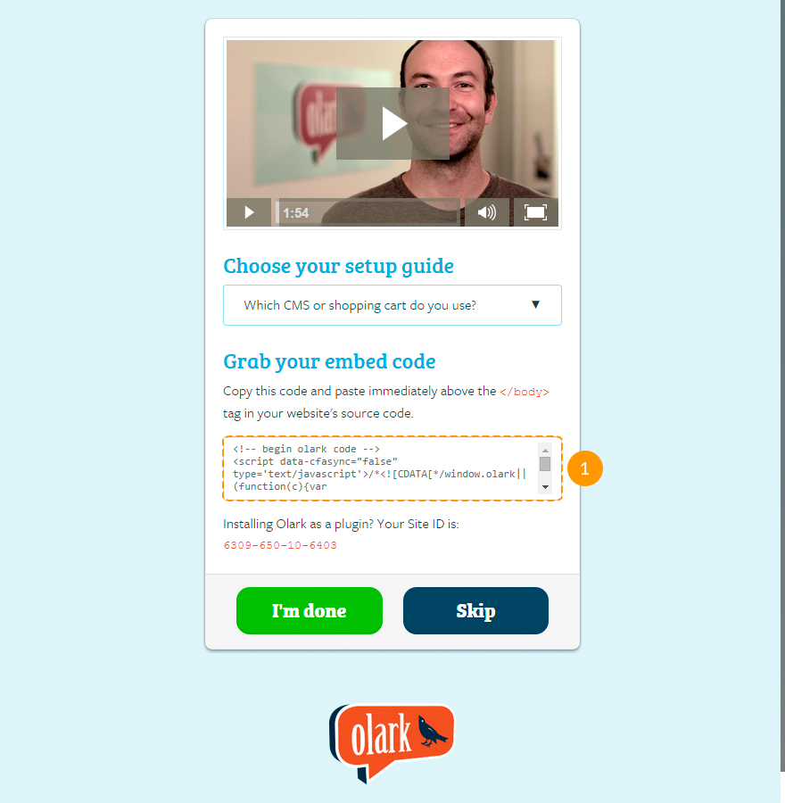
Скопируйте полученный код.
Вы также можете получить пробный бесплатный 6-месячный бронзовый пакет. Для этого перейдите по ссылке и внесите свои регистрационные данные.
- На своем сайте в панели администрирования зайдите на страницу Configuration (Настройки) и в разделе Web services (Web-сервисы) выберите Olark settings (Настройки Olark). Вы также можете попасть на данную страницу, перейдя по ссылке http://www.example.com/?q=admin/config/services/olark, где www.example.com - адрес вашего сайта.
- Вставьте скопированный код в поле Olark code (Код Olark)

- Нажмите на кнопку Save configuration (Сохранить настройки).
- Для настройки чата зайдите на сайт Olark под своей учетной записью.
Вы также можете посмотреть следующие инструкции:
Управление содержимым Добавление, редактирование, измненение материала сайта
В данной главе мы рассмотрим, каким образом формируется содержимое сайта, а также как управлять тем или иным видом содержимого, если вы выбрали установку с демонстрационными данными.
Управление меню
В шаблоне могут быть использованы следующие типы меню:
- Main menu (Главное меню) содержит ссылки на основные страницы сайта;
- User menu (Пользовательское меню) содержит ссылки, связанные с учетной записью пользователя, такие как "Зарегистрироваться", "Войти" и пр.;
- Footer menu (Меню в подвале сайта) дублирует главное меню.
Рассмотрим каждое из них более детально.
Главное меню
Чтобы отредактировать ссылки главного меню, выполните следующие действия:
- В панели администрирования зайдите на страницу Structure → Menus (Структура → Меню) или в адресной строке браузера наберите http://www.example.com/?q=admin/structure/menu, где www.example.com - адрес вашего сайта.
- Напротив данного меню нажмите на ссылку List links (Просмотреть ссылки).

- Чтобы добавить ссылку, нажмите Add link (Добавить ссылку) вверху страницы.

- Чтобы отредактировать ссылку, нажмите Edit (Редактировать).

- Чтобы удалить ссылку, нажмите Delete (Удалить).

- Чтобы изменить порядок ссылок, перетащите ссылку в нужную позицию, а затем нажмите кнопку Save configuration (Сохранить конфигурацию).
Чтобы настроить выпадающее меню, выполните следующие инструкции:
- В панели администрирования зайдите на страницу Structure → Blocks (Структура → Блоки) или в адресной строке браузера наберите http://www.example.com/?q=admin/structure/block, где www.example.com - адрес вашего сайта.
- Найдите блок с названием данного меню.
- Нажмите на ссылку Configure (Настроить) напротив данного блока.
- Внесите изменения в разделе Superfish settings (Настройки Superfish).

- Нажмите кнопку Save block (Сохранить блок).
Чтобы переместить меню, выполните следующие инструкции:
- В панели администрирования зайдите на страницу Structure → Blocks (Структура → Блоки) или в адресной строке браузера наберите http://www.example.com/?q=admin/structure/block, где www.example.com - адрес вашего сайта.
- Найдите блок с названием данного меню.
- Переместите блок меню в нужный регион так же, как обычный блок.
- Нажмите кнопку Save blocks (Сохранить блоки).
Пользовательское меню
Пользовательское меню - это стандартное меню Drupal. Оно не имеет выпадающих вложенных меню. Чтобы отредактировать или переместить данное меню, вы можете воспользоваться теми же инструкциями, что и для главного меню.
Меню в подвале сайта
Меню в подвале сайта дублирует главное меню. Чтобы настроить данное меню, выполните следующие инструкции:
- В панели администрирования зайдите на страницу Structure → Blocks (Структура → Блоки) или в адресной строке браузера наберите http://www.example.com/?q=admin/structure/block, где www.example.com - адрес вашего сайта.
- Найдите блок с названием данного меню.
- Нажмите на ссылку Configure (Настроить) напротив данного блока.
-
На открывшейся странице, кроме стандартных полей блока, заполните следующие поля:
- Menu (Меню) - название меню, которое следует дублировать;
- Starting level (Начальный уровень) - видимость блока на странице. Блоки, которые начинаются с первого уровня, всегда будут видны. Блоки, которые начинаются со второго и более уровня, будут видны на страницах, где данные пункты меню будут активными.
- Maximum depth (Максимальная глубина) - количество отображаемых уровней меню. Поставьте 1, чтоб исключить все подменю.

- Нажмите кнопку Save block (Сохранить блок).
Вы также можете посмотреть следующие инструкции:
Управление материалами
В шаблоне присутствуют следующие основные типы материалов:
- Banner (Баннер) представляет собой название компании, логотип и дополнительную информацию. Может использоваться в блоках "Our partners" (Наши партнеры), "Our clients" (Наши клиенты) и т.п.;
- Employee (Сотрудник) представляет собой фотографию сотрудника и короткую информацию о нем. Может использоваться в блоках "Our team" (Наша команда), "Our staff" (Наша персонал) и т.п.;
- FAQ (ЧАВО) представляет собой материал формата "вопрос-ответ". Используется на странице "Часто задаваемые вопросы";
- Portfolio item (Элемент портфолио) представляет собой заголовок, изображение и краткую информацию. Используется на страницах "Portfolio" (Портфолио), "Gallery" (Галерея), "Services" (Услуги) и т.п.;
- Service (Услуга) представляет собой заголовок, изображение и краткую информацию. Может использоваться в блоках "Services" (Услуги) и т.п.;
- Slide (Слайд) представляет собой заголовок, изображение и краткую информацию. Используется в слайдере на главной странице;
- Testimonial (Отзыв) - представляет собой кроткий отзыв и информацию о его авторе. Может использоваться в блоках "Testimonials" (Отзывы), "What people say about us" (Что о нас говорят) и т.п.;
- и прочие.
Изменения данных типов материалов (добавление, редактирование, удаление) сразу же отображаются в блоках и на страницах, где они используются.
Некоторые модули могут добавлять свои типы материалов. К примеру, модуль Panels добавляет тип материала Panel (Панель).
Вы также можете создавать собственные типы материала.
Для изменения, удаления или управления материалом выполните следующие действия:
- Чтобы просмотреть полный список материалов, в панели администрирования зайдите на страницу Content (Материалы) или в адресной строке браузера наберите http://www.example.com/?q=admin/content, где www.example.com - адрес вашего сайта.
- Чтобы создать материал, нажмите на ссылку Add content (Добавить материал).

- На открывшейся странице выберите тип материала.

- Заполните необходимые поля и нажмите кнопку Save (Сохранить).
- Чтобы отредактировать существующий материал, на странице Content (Материалы) в поле Show only items where (Показать только элементы, где) выберите тип материала и нажмите кнопку Filter (Отфильтровать).

- Чтобы отредактировать материал, нажмите ссылку Edit (Редактировать) напротив его названия.

- Чтобы удалить материал, нажмите ссылку Delete (Удалить) напротив его названия.

Вы также можете посмотреть следующие инструкции:
Управление страницами
Все страницы шаблона созданы с помощью модуля Panels (Панели).
Для управления страницами выполните следующие действия:
- Чтоб просмотреть все существующие страницы, в панели администрирования зайдите на страницу Structure → Pages (Структура → Страницы) или в адресной строке браузера наберите http://www.example.com/?q=admin/structure/pages, где www.example.com - адрес вашего сайта.
- Чтоб создать страницу, вверху открывшейся страницы нажмите ссылку Add custom page (Добавить пользовательскую страницу).

- Следуйте инструкциям на экране, заполните все необходимые поля, сохраните внесенные данные.
- Чтобы отредактировать существующую страницу, нажмите на ссылку Edit (Редактировать) напротив нужного заголовка.

- Чтобы удалить страницу, в режиме редактирования нажмите на ссылку Delete (Удалить) вверху страницы.

Вы также можете посмотреть следующие инструкции:
Управление представлениями (Views)
Большая часть содержимого шаблона создана с помощью представлений, таких как:
- Archive (Архив) собирает тип материала "Blog entry" (Запись блога), группирует их по месяцам года и выводит в виде блока или страницы.
- Banners (Баннеры) собирает записи материала типа "Banner" (Баннер) и отображает их в качестве блока.
- Categories (Категории) собирает термины таксономии из словаря "Blog categories" (Категории блога) и выводит их в виде блока.
- FAQs (ЧАВО) собирает записи материала типа FAQs(ЧАВО) и выводит их в виде страницы.
- Portfolio (Портфолио) собирает записи материала типа "Portfolio Item" (Элемент портфолио) и выводит их в виде страниц Portfolio (Gallery, Services) в две, три или четыре колонки.
- Portfolio filter (Фильтр портфолио) создает блок фильтра для портфолио, используется в представлении "Portfolio" (Портфолио).
- Recent comments (Последние комментарии) собирает комментарии и выводит их в виде блока или страницы.
- Recent posts (Последние записи) собирает записи материала типа "Blog entry" (Запись блога) и выводит их в виде блока.
- Slider (Слайдер) собирает записи материала типа "Slide" (Слайд) и выводит их в виде блока слайдера.
- Team (Команда) собирает записи материала типа "Employee" (Сотрудник) и выводит их в виде блока.
- Testimonials (Отзывы) собирает записи материала типа "Testimonial" (Отзыв) и выводит их в виде страницы или блока.
- и прочие.
Для управления представлениями выполните следующие действия:
- Чтоб просмотреть все существующие представления, в панели администрирования зайдите на страницу Structure → Views (Структура → Представления) или в адресной строке браузера наберите http://www.example.com/?q=admin/structure/views, где www.example.com - адрес вашего сайта.
- Чтобы создать новое представление, нажмите на ссылку Add new view (Добавить новое представление) вверху открывшейся страницы.
- На открывшейся странице заполните название представления, тип материала, вид сортировки, в каком виде отображать.
- Чтобы указать дополнительные параметры, нажмите кнопку Continue & edit (Продолжить и редактировать). Чтобы закончить создание представления, нажмите кнопку Save & exit (Сохранить и выйти).

- Чтобы отредактировать существующее представление, выберите пункт Edit (Редактировать) в выпадающем списке напротив нужного представления.

Не вносите изменения в существующие представления, если вы не уверены в том, что вы делаете.
- Чтобы удалить существующее представление, выберите пункт Delete (Удалить) в выпадающем списке напротив нужного представления.

- Представлениями, которые отображены в виде блоков, можно управлять так же, как и обычными блоками. Вы также можете попасть на страницу настроек представления в виде блока со страниц своего сайта. Для этого наведите курсор мышки на нужный вам блок, затем нажмите на пиктограмму шестеренки в правом верхнем углу блока и выберите пункт Configure block (Настроить блок):

- Аналогичным образом настраиваются представления, которые отображены в виде страниц. Наведите курсор мышки на область содержимого нужной вам страницы, затем нажмите на пиктограмму шестеренки в правом верхнем углу страницы и выберите пункт Edit view (Настроить представление):
Вы также можете посмотреть следующие инструкции:
Управление медиа-содержимым
Загрузка изображений и видео в шаблоне осуществляется по средствам модуля Media (Медиа).
Для управления медиа-содержимым выполните следующие действия:
- Чтоб просмотреть полный список медиа-файлов, в панели администрирования зайдите на страницу Content (Материалы) и перейдите на вкладку Media (Медиа) или в адресной строке браузера наберите http://www.example.com/?q=admin/content/media, где www.example.com - адрес вашего сайта.
- Чтобы удалить существующие изображения или видео, отметьте их, в появившемся поле Operations (Операции) выберите Delete (Удалить) и нажмите кнопку Submit (Подтвердить).

- Для того, чтобы добавить медиа-файл в материал, в режиме создания или редактирования материала нажмите кнопку Select media (Выбрать медиа).

-
В появившемся окне:
- во вкладке Upload (Загрузить) вы можете загрузить изображение с вашего компьютера;
- во вкладке Web вы можете указать ссылку на изображение, размещенное в Интернете, а также ссылку на видео с сайтов YouTube и Vimeo;
- во вкладке Library (Библиотека) вы можете выбрать одно из изображений или видео, уже загруженных на ваш сайт.

Пожалуйста, примите к сведению, что добавить видео вы сможете только для типа материала Blog entry (Запись блога).
Вы также можете посмотреть следующие инструкции:
Шоткоды
Шоткод (Shortcode в пер. с анг. - короткий код) создан для того, чтобы не писать весь программный код для выполнения определенной функции, состоящего из несколько десятков строк, а заменить его маленьким коротким кодом, состоящим в основном из 1-2 слов.
Чтобы задействовать шоткоды, необходимо включить модули Shortcode, TM Shortcodes.
Список доступных шоткодов вы можете просмотреть в блоке Text format (Текстовые форматы) при создании материала.
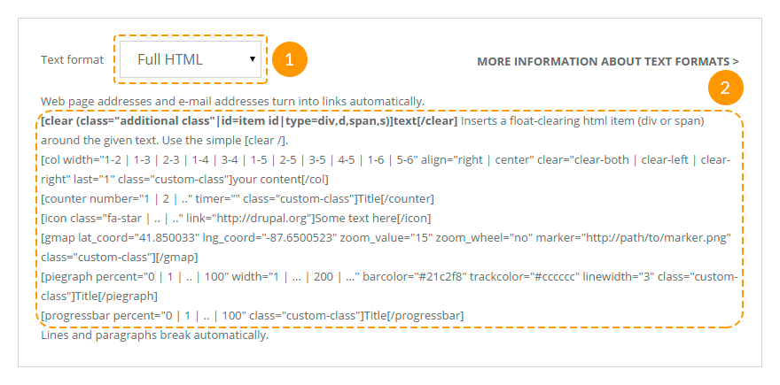
Вы можете воспользоваться следующими шоткодами:
-
[clear][/clear] - шоткод для очистки плавающих блоков. Имеет следующие атрибуты:
- class - дополнительный класс;
- id - идентификатор (id) элемента;
- type - тип элемента: блочный (div, d) или строчный (span, s).
-
[col][/col] - шоткод для вывода содержимого в колонках. Имеет следующие атрибуты:
- align - выравнивание колонки: right - колонка будет отображаться с правой стороны внещнего блока, center - колонка будет выровнена по центру внешнего блока;
- class - дополнительный класс элемента;
- clear - очистка плавающих элементов: clear-both - слева и справа, clear-left - только слева, clear-right - только справа;
- last - должен иметь значение "1" для последней колонки.
- width -ширина колонки: 1-2 - половина, 1-3 - треть, 2-3 - две третьих, 1-4 - четверть, 3-4 - три четверти, 1-5 - одна пятая, 2-5 - две пятые, 3-5 - три пятые, 4-5 - четыре пятых, 1-6 - одна шестая или 5-6 - пять шестых ширины внешнего блока.
Данный шоткод рекомендуется использовать внутри шоткода [clear][/clear].
Пример использования шоткода:
[clear type="div"] [col width="1-3"]Содержимое колонки[/col] [col width="1-3"]Содержимое колонки[/col] [col width="1-3" last="1"]Содержимое колонки[/col] [/clear]Возможные варианты использования:

-
[counter][/counter] - шоткод для отображения анимированных счетчиков. Имеет следующие атрибуты:
- class - дополнительный класс элемента;
- number - любое целое число;
- timer - скорость в миллисекундах, с которой будет происходить отсчет от 0 до указанного числа.
Содержимое шоткода служит заголовком.
Пример использования шоткода:
[counter number="300" timer="30" class="custom-class"]Заголовок[/counter]Возможные варианты использования:
-
[icon][/icon] - шоткод для отображения шрифтовых иконок. Во фреймворке использована версия Font 4.1.0. Шоткод имеет следующие атрибуты:
- class - класс шрифтовой иконки;
- link - URL-адрес при необходимости сделать иконку ссылкой.
Пример использования шоткода:
[icon class="fa-star"]Текст[/icon]Возможные варианты использования:

-
[gmap][/gmap] - шоткод для вставки Google-карт. Шоткод имеет следующие атрибуты:
- class - дополнительный класс элемента;
- lat_coord - координата широты;
- lng_coord - координата долготы;
- zoom_value - начальный уровень масштабирования карты. Доступны значения от 1 до 20;
- zoom_wheel - установка прокрутки карты колесиком мышки. Доступны значения "yes" и "no".
Пример использования шоткода:
[gmap lat_coord="41.850033" lng_coord="-87.6500523" zoom_value="15" zoom_wheel="no" class="custom-class"][/gmap]Возможные варианты использования:

-
[piegraph][/piegraph] - шоткод для отображения кругового индикатора процессов. Шоткод имеет следующие атрибуты:
- barcolor - цвет фоновой полосы;
- class - дополнительный класс элемента;
- linewidth - ширина полосы, любое целое число;
- percent - прогресс в процентах (0-100);
- trackcolor - цвет трека (полосы прогресса);
- width - диаметр прогрессбара, любое целое число.
Содержимое шоткода служит заголовком.
Пример использования шоткода:
[piegraph percent="60" width="200" barcolor="#21c2f8" trackcolor="#cccccc" linewidth="3"]Заголовок[/piegraph]Вариант использования:

-
[progressbar][/progressbar] - шоткод для отображения прогрессбаров. Шоткод имеет следующие атрибуты:
- class - дополнительный класс элемента;
- percent - прогресс в процентах (0-100);
Содержимое шоткода служит заголовком.
Пример использования шоткода:
[progressbar percent="30"]Заголовок[/progressbar]Возможные варианты использования:

Одностраничные шаблоны Особенности работы
Для одностраничных шаблонов актуальны все вышенаписанные инструкции.
Содержимое
Чтобы внести изменения в содержимое шаблона, в панели администрирования зайдите на страницу Structure → Blocks (Структура → Блоки) или в адресной строке браузера наберите http://www.example.com/?q=admin/structure/block, где www.example.com - адрес вашего сайта.
Разместите блоки в нужные регионы и сохраните настройки.
Проследите, чтобы все необходимые блоки были размещены на Главной.
Чтобы разместить блок только на главной, выполните следующие действия:
- В режиме редактирования блока перейдите к Visibility settings (Настройки видимости) и переключитесь на вкладку Pages (Страницы).
- В поле Show block on specific pages (Показать блок на определенных страницах) выберите пункт Only the listed pages (Только на перечисленных страницах).
- Здесь же в текстовом поле введите
<front>.

Menu
Убедитесь, что модуль Superfish включен.
После того, как все блоки размещены в нужные регионы, перейдите к редактированию главного меню (Main menu).
Удаление и изменения порядка пунктов меню осуществляется так же, как и в обычном меню.
Чтобы добавить/изменить пункт меню, в поле Path (Путь) введите ссылку вида <front>#block-id, где #block-id - id блока или региона.
Вы можете воспользоваться следующими id:
- #home - id начала страницы;
- #content - id региона Content;
- #section_1_wrapper - id региона Section 1;
- #section_2_wrapper - id региона Section 2;
- #section_3_wrapper - id региона Section 3;
- #section_4_wrapper - id региона Section 4;
- #section_5_wrapper - id региона Section 5;
- #section_6_wrapper - id региона Section 6;
- #section_7_wrapper - id региона Section 7;
- #section_8_wrapper - id региона Section 8;
- #section_9_wrapper - id региона Section 9;
- #section_10_wrapper - id региона Section 10;
- а также id любого блока.
После того, как все изменения в меню внесены, перейдите на страницу Structure → Blocks (Структура → Блоки) или в адресной строке браузера наберите http://www.example.com/?q=admin/structure/block, где www.example.com - адрес вашего сайта.
Переместите блок (Superfish) в регион Menu.
Проверьте, чтобы в настройках данного блока в поле Menu parent (Родительское меню) был выбран пункт <Main menu>.
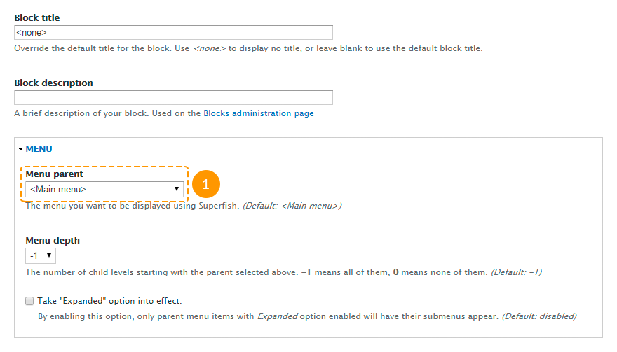
Сохраните настройки.